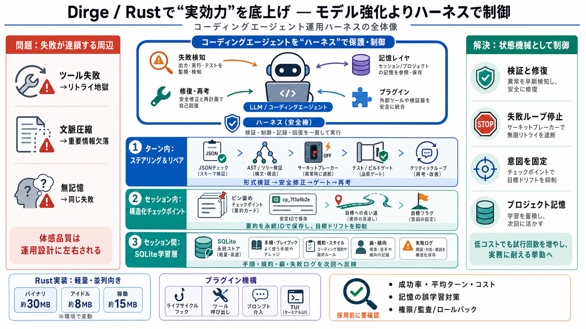

コーディング・エージェントは「賢いLLM」だけで決まらない。Dirgeは“ハーネス（運用基盤）”で失敗・文脈崩れ・無記憶を抑え、低コスト環境でも成果を出す設計を狙う。
ツール呼び出しが壊れるとトークン消費とノイズが増え、指示が失われて悪循環になる。さらにエージェントはセッション単位の記憶が弱く、文脈要約が常に効くわけではない。
ツール失敗 → 型崩れ/誤編集 → リトライ地獄
長作業 → 文脈圧縮 → 重要情報の欠落
無記憶 → 同じ失敗を繰り返す
モデル能力より運用設計が体感を支配
DirgeはLLMを“直接強化”するより、状態機械的な制御で期待値を満たす。失敗を検知し、修復し、必要なら再考へ回し、長期の意図を保持する。
ポイント（用語）: ハーネス（Harness）＝制御ループ / 復旧 / 文脈維持 / 記憶 / 拡張（プラグイン）をまとめた運用基盤。
DirgeはRustで実装され、軽量で並列実行・運用コストを抑えやすい。バイナリ約30MB、アイドル約8MB、稼働約15MBという目安が示され、低負荷で“試行回数”を増やす戦略と相性が良い。
バイナリ 約30MB
約8MB
約15MB
注: 数値はOS/モデル/同時ツール数/ログ等で変わり得る。
Dirgeは問題を“時間の長さ”で分け、対策も層に割り当てる。短期（ターン内）・中期（セッション内）・長期（セッション間）で、役割の違うハーネスを用意する。
ステアリング & リペア（ターン内）
長期（ロングホライズン）（セッション内）
学習層（セッション間）
失敗を制御し続ける設計（運用基盤）
ツール呼び出しの形式ズレや破壊的上書きを避けるため、検証→安全な修正→最終ゲート→必要なら二次評価の再ループを組み合わせる。
JSON等の“形式”を検証し、ズレを早期に止める
tree-sitterで構文（AST）を確認して書き込み前にチェックする
サーキットブレーカー/メタ認知モニタで同じ失敗の繰り返しを停止
テスト・ビルド等の“事前最終ゲート”で合格条件を満たすまで進めない
必要に応じてcritic_provider/第二の目で再ループする
単発の要約で終盤近くに圧縮すると重要が落ちやすい。Dirgeは要約を安定ID付きの“永続チェックポイント”として扱い、目標のドリフトを抑える。
文脈圧縮の劣化 → 欠落/目標ずれ
MiMo-Code由来の発想で構造化要約をチェックポイント化
安定IDで再参照・整合を取り、ドリフトを防止
長作業でも意図を“固定”しやすくする
Bilingual（用語）: チェックポイント（Checkpoint）= 状態の保存・参照地点 / 永続ラベル。
セッション間はモデルが無記憶である点を問題視し、プロジェクト固有の“知識と癖”をSQLiteに蓄積する。バックグラウンド更新で次回に反映し、同じ失敗の再発を減らす。
ビルド手順 / コーディング規約 / ライブラリの癖 / 過去の失敗ログ
セッション終了後にバックグラウンドで更新
短期会話ではなく“継続して成果が出る開発”へ
プロジェクト別記憶で運用を個別最適化
DirgeはライフサイクルのフックとJanetベースのプラグインで、ツール呼び出し・文脈改変・スラッシュコマンド追加・TUI介入などを拡張可能にする。
エージェントのライフサイクル各所
ツール呼び出しブロック / プロンプト介入
TUIダイアログへの介入
注意（用語）: MCPは外部ツール連携には有用でも、本質的な挙動変更には迂遠になり得る。
ハーネスは状態機械（ステートマシン）で運用され、主に次の4つでLLMの実行品質を守る。
LLM出力をツール仕様に合わせて検証し、安全に修正（ターン内の失敗抑制）
失敗ループを止め、再考させる
要約/チェックポイントで長作業の意図を保持（セッション内）
プロジェクト記憶を保存し、次回に反映（セッション間）
提示文は設計思想と機能説明が中心で、成功率・平均ターン数・コスト比較などの定量評価は不足している。採用判断ではベンチと安全運用、記憶の品質保証を追加で確認すべきだ。
成功率/平均ターン/コスト/比較対象/タスク別改善度
誤学習・古い情報の混入、curator/リグレッション検知の統制
プラグイン権限、監査ログ、ロールバック、権限境界の厳密性
README/設計/Issue-PR/ベンチ結果で実装を確認
Dirgeは「モデルを賢くする」より「ハーネスで失敗を制御し続ける」。ターン内の検証・修復、セッション内のチェックポイント、セッション間のプロジェクト記憶、さらにプラグイン拡張で、低コストでも実務に耐える挙動を狙う。
失敗連鎖を抑え、意図のドリフトを減らす
時間スケール別（ターン/セッション/セッション間）の層構造
Rustで軽量化→並列実行しやすい運用
公式リポジトリREADME / 設計ドキュメント / Issue・PR / ベンチ結果を確認
No references found